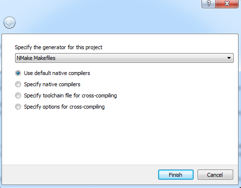

Index
Introduction
The goal of IrrIMGUI is to provide a render engine for the IMGUI system that works together with Irrlicht.
- Irrlicht is an easy to learn and very fast 3D graphic engine, that supports OpenGL and DirectX.
- IMGUI is an intermediate mode GUI system, that allows the user to draw complex GUI widgets very easily. Furthermore, I think it has a very nice and modern graphic style.
Of course IMGUI is not as complex like CEGUI. But for small application it is the ideal solution to have a very potential user interface with just some lines of code. If you need instead a complex user interface with scripted widgets and events, and highly adaptable template system, you should use CEGUI instead. But take care, you will end up with much more code and dependencies.
Following Features are supported so far:
- An Irrlicht bases render engine, that uses high level Irrlicht functions to draw the GUI elements (upcoming version 0.2).
- A native OpenGL renderer for test purposes and as a fall-back solution.
- An out of the box working Event Receiver for Irrlicht to bind mouse and keyboard events to the GUI.
- The input event handling for IMGUI can be easily customized to bind new input devices like joystick and another key-layout to the GUI.
- Full support for different fonts and font sizes.
- Support for drawing Irrlicht Image objects (IImage) inside the GUI.
- Support for drawing Irrlicht Texture objects (ITextrue) inside the GUI (thus you can render 3D content directly into GUI elements).
LatestVersionNews
Current Version: 0.1.0
Highlights
- Initial Release
- OpenGL native driver
- Full multi-font support
- Full support for IImage, ITexture and Raw Image data
Tested Dependency Versions
Tested Build Variants
- Windows 64bit, Visual Studio 2015
- Shared library (debug build)
Example Images
A picture is worth a thousand Words. So I will show you some examples:
This is a simple control interface created with IMGUI (example program 02.AnotherWindow).
IMGUI supports also TTF fonts (example program 03.DifferentFonts).
With the Irrlicht IMGUI binding you can draw every IImage object to the GUI (example program 05.DragNDrop).
You can also draw a render target texture to the GUI (example program 06.RenderWindow).

Use Render Target inside the GUI
How to Start
Preparations
- You need a well working Irrlicht library compiled. Please test with the Irrlicht examples, if the library works as expected.
- Download the Irrlicht IMGUI binding: Download
- Download the latest version of IMGUI and copy all files from the ZIP into the directory
<IrrIMGUI-Path>/dependency/IMGUI The IrrIMGUI and IMGUI files are compiled together to a single shared or static library file.
- When you want to compile IrrIMGUI as library, you need CMake to generate the makefiles or projects file you want to use
Possibility 1: Embed IrrIMGUI into your Application
There are two ways how you can use IrrIMGUI. The first way is to embed all source files into your application and build it together with your project.
- For this you simply need to create the following directory structure in your project:
- Copy the source files from
<IrrIMGUI-Path>/source to <Your-Project-Path>/lib_source/IrrIMGUI
- Copy the header files from
<IrrIMGUI-Path>/includes/IrrIMGUI to <Your-Project-Path>/lib_includes/IrrIMGUI
- Copy the *.cpp and *.h files from
<IrrIMGUI-Path>/dependency/IMGUI to <Your-Project-Path>/lib_includes/IMGUI
- Setup the path
<Your-Project-Path>/lib_includes/ as include search directory
- Setup the preprocessor defines to compile IrrIMGUI as static library (
_IRRIMGUI_STATIC_LIB_)
- Setup the preprocessor define
_IRRIMGUI_DIRECT_IRRLICHT_INCLUDE_ if your project includes Irrlicht like #include <irrlicht.h> and not like #include <Irrlicht\irrlicht.h>
- Setup the following preprocessor defines if you want:
_IRRIMGUI_NATIVE_OPENGL_ to use the native OpenGL driver instead of the Irrlicht driver (test and fall-back solution)_IRRIMGUI_FAST_OPENGL_TEXTURE_HANDLE_ to use in the native OpenGL driver a dirty but very fast hack to determine the OpenGL texture ID from a ITexture object (this feature might be broken for untested Irrlicht versions)
Possibility 2: Build the Library
The second way is to build a shared or static library. This library will contain the Irrlicht IMGUI binding and the IMGUI System. The build tool CMake supports a build on many different platforms and with many different compilers. You can use CMake from command line or - more convenient for an individual configuration - with a graphical user interface called cmake-gui. I will explain the cmake-gui build process to you, since I expect that the CMake command line tools are anyway for experts that know how to build a library with CMake.
- Start a command shell with a proper compiler setup and with the CMake binary directory inside your path variable (Visual Studio for example has a batch file that setups all variables and paths for your compiler: e.g.
VsDevCmd.bat).
- Goto your IrrIMGUI directory and start the program
cmake-gui
- At top of the CMake GUI window you can enter two paths "Where is the source code" and "Where to build the binary"
- Enter in the first text field "Where is the source code" the path to the IrrIMGUI library (the root directory of this library where also CMakeLists.txt is located)
- Enter in the second text field "Where to build the binary" the path where the temporary build files should be stored. For example
<IrrIMGUI-Path>\build\vc64\debug\shared In this way you can have different build paths for different compilers and build variants.

CMake after start
- Now click on "Configure" and select your compiler options:
- For Visual Studio (command line build) select "NMake Makefiles" and "Use default native compilers"
- For MingW select "MSYS Makefile" and "Use default native compilers"
- You can also create a Visual Studio or Eclipse Project file to compile the library (I have not tested this so far).

CMake Compiler Options
- Click on finish. Now CMake does some analysis of your environment. In the end some red error messages are displayed, since you first need to specify the Irrlicht path.
- All variables that are new are printed with a red background color. Setup at least the following variables:
- CMAKE_BUILD_TYPE = [Debug|Release] specify here if you want to build a debug or release library.
- CMAKE_INSTALL_PREFIX = <Install-Path> specify here the path where cmake should copy the compiled files (e.g.
<IrrIMGUI-Path>\install\vc64\debug\shared).
- IRRLICHT_BIN_DIR = <path-to-irrlicht-shared-lib> specify here the path to the Irrlicht DLL or shared library
- IRRLICHT_LIB_DIR = <path-to-irrlicht-shared-lib> specify here the path to the Irrlicht link library or static library
- IRRLICHT_INCLUDE_DIR = <path-to-irrlicht-shared-lib> specify here the path to the Irrlicht headers
- (Optional) Setup the options you need for your individual build:
- IRRIMGUI_BUILD_EXAMPLE = [On|Off] enable this option to build also the example programs.
- IRRIMGUI_INSTALL_EXAMPLE_SOURCES = [On|Off] enable this if you want to copy the source files for the examples also to the binary directory.
- IRRIMGUI_INSTALL_MEDIA_FILES = [On|Off] you should enable this, when you want to use the examples out of the box. Otherwise the examples would miss the media files and will not run.
- IRRIMGUI_IRRLICHT_DIRECT_INCLUDES = [On|Off] enable this option when you include your Irrlicht headers with
#include <irrlicht.h> instead of #include <Irrlicht\irrlicht.h>
- IRRIMGUI_NATIVE_OPENGL = [On|Off] enable this for version 0.1, since a Irrlicht driver is not available so far
- IRRIMGUI_STATIC_LIBRARY = [On|Off] enable this if you want to compile IrrIMGUI as static library. Attention: In this case you also need a static Irrlicht library!

CMake Build Options
- Afterwards click again on "Configure". Now all error messages should be gone away. You should also see in the text-output a summary of your build-configuration.
- Click on "Generate" to create the makefiles or project files for your build.
- Now you can start you build. Change in the command line to your build directory (the one you specified in the second text file of the CMake GUI e.g.
<IrrIMGUI-Path>\build\vc64\debug\shared)
- Start the build on command line by:
- Visual Studio:
nmake
- MingW:
make
- (Optional) If Doxygen and DOT/Graphviz are installed at your computer, you can also build a documentation by:
- Visual Studio:
nmake doc
- MingW:
make doc
- At the end install your library files by:
- Visual Studio:
nmake install
- MingW:
make install
HelloWorld Example
The HelloWorld example builds up a simple scene with Irrlicht (I expect that you have some experience with Irrlicht. If not, please look first at the Irrlicht Tutorial). Furthermore a simple IMGUI window with some text and an Exit-button is drawn. The full source code can be found in the file examples\01.HelloWorld.cpp. In this description, I will simply highlight the IMGUI specific code.
- Setup the Irrlicht device: When you setup the Irrlicht device, you can use the IrrIMGUI EventReceiver to pass your Mouse and Keyboard events directly to the GUI.
Download
Version History
22.09.2015 - Version: 0.1.0
Highlights
- Initial Release
- OpenGL native driver
- Full multi-font support
- Full support for IImage, ITexture and Raw Image data
Tested Dependency Versions
Tested Build Variants
- Windows 64bit, Visual Studio 2015
- Shared library (debug build)
 1.8.10
1.8.10